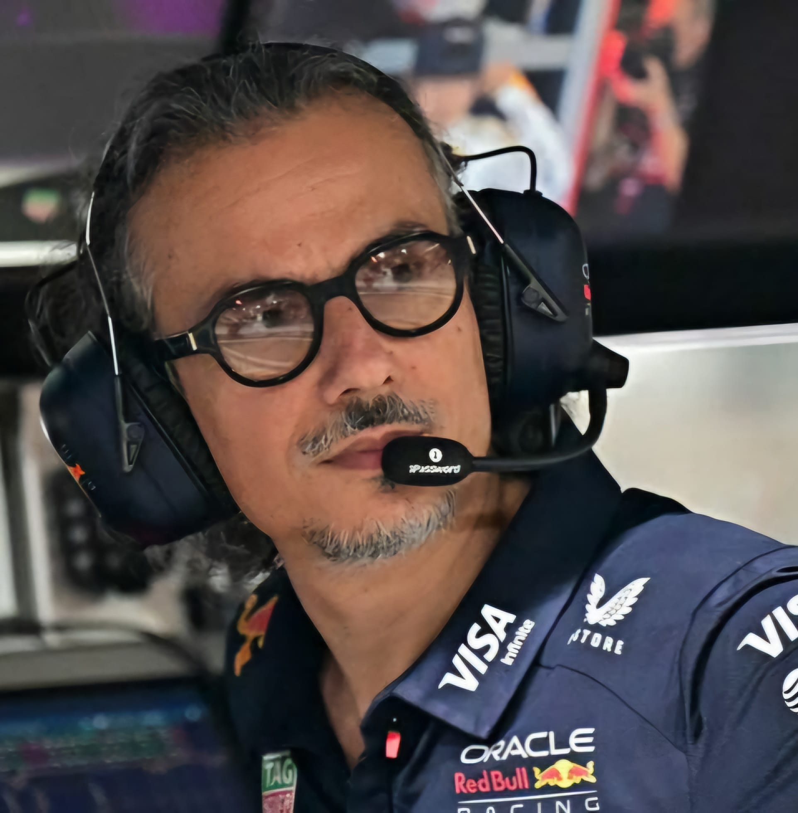

Laurent Mekies
Laurent Mekies
Team: Red Bull Racing
Nationality: French
Born: 1977
In charge since: 2025
History: Mekies, a French engineer with extensive FIA and F1 experience, became Red Bull’s Team Principal in mid-2025 following Christian Horner’s departure. Starting his career with Arrows in 2001, Mekies moved to Minardi (later Toro Rosso), where he became Chief Engineer. After serving as Safety Director and Deputy Race Director at the FIA, he joined Ferrari in 2018 as Sporting Director and was later promoted to Racing Director. Mekies became AlphaTauri Team Principal in 2024 before being promoted to lead Red Bull. He
